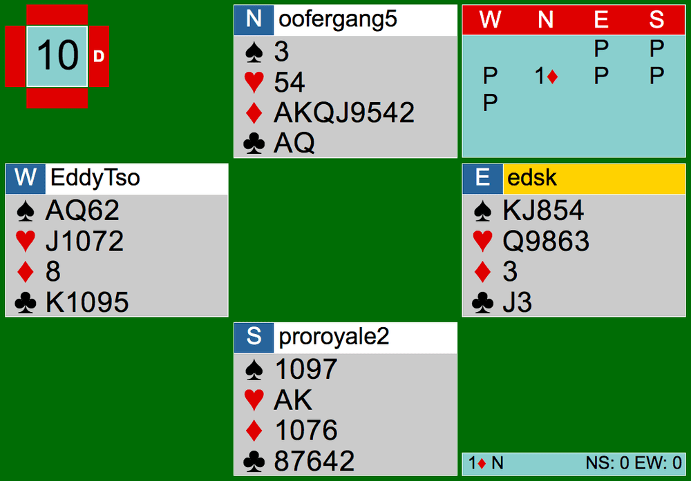
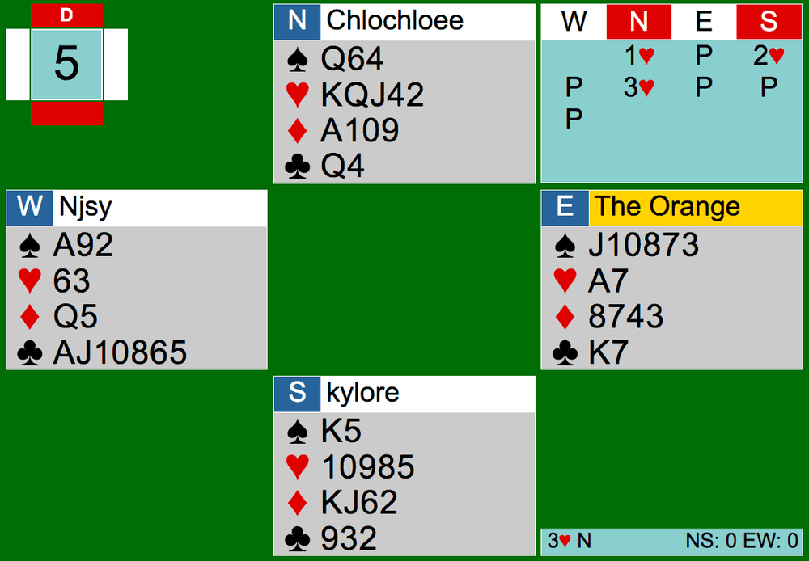
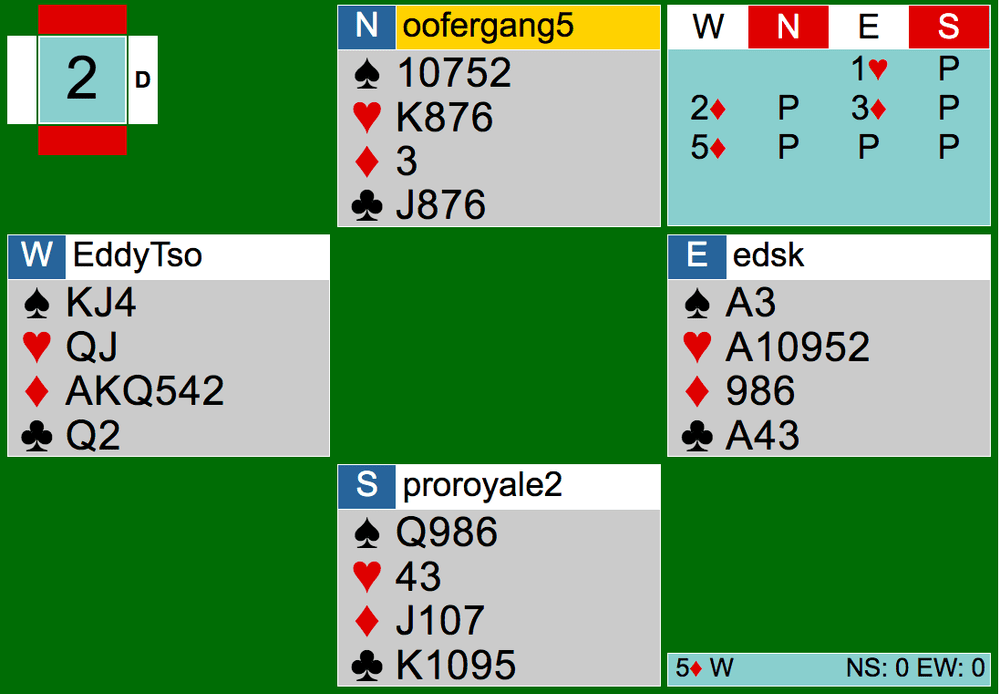

Another exciting CK Team Game comes to an end— well actually, two CK Team Matches this time! There was an outstanding player turnout on July 18th. For the first time since the pandemic, we were able to create 2 full team matches without any non-CK substitutes. That meant 16 eager players each at one of the 4 welcoming tables. As excited as I am of this milestone, this article will be about bidding to game. Throughout the article, I will be referring to players and teams by the following:
Team Game #1 consists of: Team A (Chloe, Aldwyn, Eddy, Edmond); Team B (Nico, Nancy, Kyle, Keith)
Team Game #2 consists of: Team C (Helen, Nathan, Anthony, Victorin); Team D (Joey, Joe, Edmund, Gary)
Link to Team Game #1’s hands: http://webutil.bridgebase.com/v2/tview.php?t=5749-1595113386
Link to Team Game #2’s hands: http://webutil.bridgebase.com/v2/tview.php?t=5925-1595115718
Hopefully after reading this, players will minimize the times they miss a game contract.

Starting off simple, let’s take a look at the bidding on Board 10 from Team Game #1’s Team B.
After three passes, North opens the bidding with 1D, showing an opening hand with 3+ diamonds. The auction ended there, and NS ended up making 1D+5, missing slam. One of the first keys to not missing a game is to know when to respond. If your hand has 6 or more points or an Ace, you must respond. Here in this case, just a simple 1NT response will allow North to bid again and show his values. A follow up guideline to responding with 6+ points or an Ace is: new suits by responder are forcing. This will ensure your partner will not pass and miss out on game.
Another key to avoid missing game is to know how strong or weak your bid is. At Table A of Team Game #1, Board 5 shows a great example of bidding correctly with limit raises and invitational bids.

As seen, North opens the bidding with 1H, showing 5 hearts and an opening hand. South bids 2H. This bid is called a limit raise, also known as a simple raise. It shows the bare minimum responder can have— 6-9 points and support for opener’s suit. North, uncertain if they have game, invited partner to bid 4H or pass and play in 3H. This 3H bid asks South if South’s hand is on top of the 6-9 point range or towards the bottom. Generally, North should have at least 15 points to bid 3H, but since NS were vulnerable and they’re playing in IMPs, it’s reasonable to try for game. South correctly passed 3H holding a wimpy 7 points with a solid 4 card heart support. The auction ended there. The key takeaway here is to understand your partner’s point range. If they are showing at least 6 points and you hold 19 points, together your pair has 25 points together, which is generally enough for game. If your partner is showing 10-12 points and you think you both have game only if your partner has a good 11 or 12 points, then you can invite them to game.
Lastly, the easiest way to find a game contract (and to know you have game) is by playing a system called 2/1 (two over 1). I’ve explained this in previous articles before, but it can’t hurt to refresh everyone’s memory a bit.
2/1 is a system that forces a pair to bid to game when responder makes a bid on the 2-level that is below the opener’s suit. 2/1 bidding sequences look like: (opener/responder)
1D/2C 1H/2C 1H/2D 1S/2C 1S/2D 1S/2H
When either one of these 6 patterns above are bid, neither player can pass until a game contract is reached. You must also have an opening hand to be able to bid 2/1 auctions. It is important to note that responder must not have passed before bidding 2/1 and there is no interference (no bids or doubles by the opponents) for the responding bid to be a 2/1 bid.

On Board 2 in Team B’s table of Team Game #1, Wests 2D bid is a 2/1 bid. It forces East to not pass until they reach game because the 2D bid is lower than the heart suit opening made by East on the 2-level. With a solid 18 points and a great diamond suit, 2D GF was the right call. There could have been some slam seeking in the bidding, but overall, EW got to a not-so-horrible contract easily with confidence.
In sum, when bidding, don’t pass when you have values to show to your partner. Just an Ace or 6 points is enough to respond. Remember the point values your partner’s bid might show. In limit raises and invites, it can tell a lot to declarer where the contract should land. If you know that together you have 25 points together, go for game. Arguably the most important is to look out for 2/1 bids, or make 2/1 bids when you know you and your partner have game so you both don’t miss it. If your partnership plays 2/1, it is important to not pass until you have reached a game contract. Hope this helped! I look forward to seeing more game contracts being bid when appropriate.